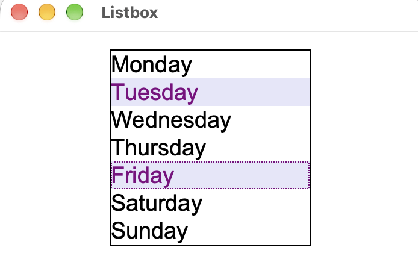

Повторення: віджети Tkinter
Повторення: віджети Tkinter
1. Label та Button: знайди помилки
У цьому коді є дві помилки. Спочатку прочитай код і дай відповіді на питання, а потім виправ помилки прямо в редакторі та перевір результат:
- Що робить рядок 8? А рядок 12?
- Запусти код. Чому текст змінився одразу, а самої кнопки у вікні немає?
- Виправ обидві помилки, щоб кнопка з'явилася і змінювала напис лише після натискання.
Очікування запуску...
2. Frame: кнопки в один рядок
- Навіщо тут потрібна рамка Frame, якщо кнопки можна було б покласти одразу у window?
- Допиши пропущені слова замість ___ і запусти код, щоб кнопки Pink та Blue стали поруч в один рядок.
Очікування запуску...
3. Entry: зчитування та очищення
- Що задають параметри width=18 у рядку 8 та pady=15 у рядку 9?
- Навіщо у рядку 12 написано .strip()?
- Допиши пропущені слова у функції greet() (рядки 12–14), щоб програма читала ім'я з поля вводу, виводила привітання в result_label і очищувала поле name_entry.
Очікування запуску...
 Список Listbox
Список Listbox
Вступ
Сьогодні ми вчимося створювати списки, з яких користувач може вибрати один (або кілька) рядків. Такі списки є скрізь: вибір країни, місяця, мови, пісні в плеєрі...
У Tkinter для цього є віджет Listbox. А щоб слова зі списку не зникали після закриття програми, ми також навчимося зберігати їх у файл за допомогою модуля filedialog.
Шаблон вікна:
from tkinter import *
window = Tk()
window.title("Listbox")
window.geometry("350x450")
# тут додаватимемо код
window.eval("tk::PlaceWindow . center")
window.mainloop()1. Створення Listbox і додавання рядків
days = Listbox(
window,
font=("Arial", 14),
height=7,
width=15,
selectmode=MULTIPLE,
selectbackground="lavender",
selectforeground="purple",
)
days.pack(pady=10)
days.insert(END, "Monday")
days.insert(END, "Tuesday")
days.insert(END, "Wednesday")- height=7 — скільки рядків видно одночасно.
- width=15 — ширина в символах.
- insert(куди, що) — додає рядок. END означає "в кінець списку".
- insert(0, "Sunday") — додасть рядок на початок списку.
- selectmode=MULTIPLE — дозволяє обирати одночасно кілька елементів зі списку. За замовчуванням можна обрати лише один елемент.
- selectbackground — задає колір фону вибраних елементів.
- selectforeground — задає колір тексту вибраних елементів.
Якщо рядків багато, додавати їх по одному незручно. Натомість можна використати цикл:
days_list = ["Monday", "Tuesday", "Wednesday", "Thursday", "Friday", "Saturday", "Sunday"]
for day in days_list:
days.insert(END, day)
Завдання 1: Місяці (частина 1)
- Створи файл months.py і налаштуй вікно за шаблоном.
- Створи список months із 12 англійських назв місяців ("January", "February", ...) і заповни ним Listbox за допомогою циклу for. Параметр selectmode=MULTIPLE тут не потрібен (будемо обирати один місяць).
2. Що вибрав користувач: curselection() та get()
Щоб дізнатися, що обрав користувач зі списку, потрібно використати такі два методи:
- .curselection() — повертає індекси усіх вибраних рядків (у вигляді кортежу/tuple).
- .get(індекс) — повертає текст рядка за його індексом.
def show_day():
selected = days.curselection() # наприклад, (2,)
if len(selected) == 0: # якщо не вибрано нічого
result_label.config(text="Choose a day!")
else:
index = selected[0] # 2
day = days.get(index) # "Wednesday"
result_label.config(text=f"You chose: {day}")
btn = Button(window, text="Show", command=show_day, font=("Arial", 12))
btn.pack()
result_label = Label(window, text="...", font=("Arial", 14))
result_label.pack(pady=10)Індекси починаються з 0. Перший рядок має індекс 0, другий — 1 і так далі. Якщо нічого не вибрано, curselection() поверне порожній кортеж (). Тоді selected[0] дасть помилку IndexError: tuple index out of range. Тому спочатку завжди перевіряємо, що щось вибрано: len(selected) > 0.
У прикладі вище функція виводить лише перший обраний елемент. Ось як можна вивести всі:
def show_day():
selected = days.curselection() # наприклад, (2, 3)
if len(selected) == 0:
result_label.config(text="Choose a day!")
else:
result_text = ""
for index in selected:
day = days.get(index)
result_text += day + "\n"
result_label.config(text=f"You chose:\n{result_text.strip()}")
Завдання 2: Місяці (частина 2)
- Додай кнопку "Show" і порожній Label для результату.
-
Напиши функцію для кнопки:
- якщо нічого не вибрано — виведи "Choose a month!";
- інакше виведи повідомлення у форматі: "You chose: March (month number 3)".
Завдання 3: Словник (частина 1)
Напишемо програму для створення і збереження списку англійських слів (поки що без перекладів).
Для початку створи новий файл, налаштуй головне вікно програми і додай усі необхідні віджети (Frame, Entry, Button, Listbox, Label). На цьому етапі список має бути порожній, а кнопки ще нічого не роблять (не мають параметра command).

Кольори можеш обрати які хочеш. У прикладі для фону використано #D5F2E4.
 Домашнє завдання
Домашнє завдання
Завдання
- Стилізувати застосунок із завдання 3 (налаштувати кольори фону вікна і віджетів, кольори виділення в Listbox, вигляд тексту тощо).
- Повторити, як працюють методи listbox.curselection() та listbox.get(index).
Однаковий фон для різних елементів
У Tkinter кожен віджет має свій власний стандартний колір фону. Тому коли ти змінюєш колір головного вікна, Label та Frame усе одно залишаються сірими, доки їм не задати той самий параметр bg.
Щоб не писати назву чи код кольору щоразу вручну (і не змінювати його в кількох місцях, якщо передумаєш), зручно зберегти колір у змінній на початку програми — наприклад, BG — і передавати її всюди, де потрібен фон вікна:
BG = "#D5F2E4"
window.config(bg=BG)
frame1 = Frame(window, bg=BG)
frame1.pack(pady=10)
label = Label(
window,
text="Words: 0",
font=("Arial", 14, "italic bold"),
fg="darkgreen",
bg=BG,
)
label.pack(pady=10)Тепер, якщо захочеш змінити тему програми, достатньо замінити колір лише в одному рядку зі змінною BG.
Кольори: назви та HEX
Окрім готових англійських назв із таблиці нижче, у Tkinter можна використовувати HEX-кольори — це будь-які відтінки, записані як # і 6 символів (цифри 0–9 та літери A–F), наприклад "#D5F2E4" або "#FBC5BF".
Підібрати власний відтінок і скопіювати його HEX-код можна тут: HTML Color Picker.
| Базові кольори | Світлі (для фону) | Темні (для тексту) |
|---|---|---|
| "white" | "lightblue" | "darkblue" |
| "black" | "lightgreen" | "darkgreen" |
| "red" | "lightyellow" | "crimson" |
| "blue" | "lavender" | "purple" |
| "green" | "mistyrose" | "indigo" |
| "yellow" | "peachpuff" | "teal" |
| "orange" | "aliceblue" | "darkslateblue" |
| "pink" | "honeydew" | "chocolate" |
| "gray" | "mintcream" | "navy" |
| "gold" | "seashell" | "maroon" |
| "violet" | "lightcyan" | "darkslategray" |
| "brown" | "ivory" | "forestgreen" |
Шрифти та стиль тексту
Шрифт задається кортежем font=("Назва", розмір). Третім елементом за бажанням можна додати стиль: "bold" (жирний), "italic" (курсив), "underline" (підкреслений) або їх поєднання, наприклад font=("Verdana", 14, "bold italic").
| Назва шрифту | Як виглядає |
|---|---|
| "Arial" | Чистий сучасний шрифт |
| "Helvetica" | Рівний класичний шрифт без засічок |
| "Verdana" | Широкий, легко читається |
| "Tahoma" | Компактний і чіткий для інтерфейсу |
| "Trebuchet MS" | Стильний м'який шрифт для заголовків |
| "Comic Sans MS" | Неформальний, схожий на комікс |
| "Georgia" | Елегантний книжковий шрифт |
| "Times New Roman" | Класичний шрифт із засічками |
| "Courier New" | Моноширинний (як друкарська машинка) |
| "Consolas" | Сучасний моноширинний шрифт для коду |
| "Impact" | Дуже товстий шрифт |